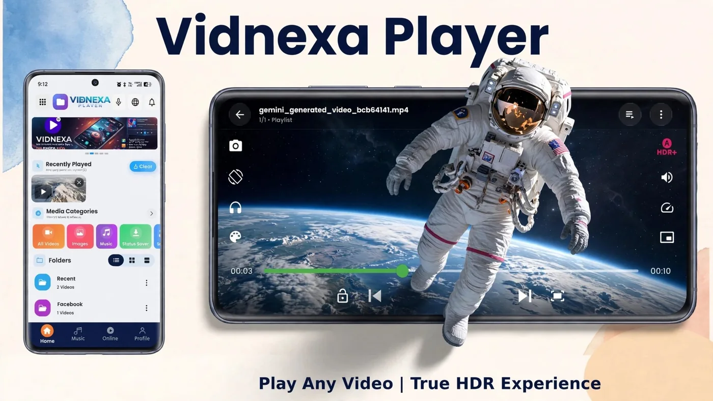

Why Won't My Video Play on Android? 7 Common Problems, Fixed
▶ Get Vidnexa on Google Play
You tap a video and get "can't play this video", a black screen, no sound, or constant stuttering. It feels like the file is broken — but usually it isn't. The real culprit is a mismatch between the file's container, codec and audio track and what your player can decode. Here are the 7 most common problems and exactly how to fix each one.

First, understand why this happens
A file extension like .mkv, .avi or .mov is only a container — a box that can hold different video and audio codecs inside. Two files with the same extension can behave completely differently: one plays fine, the other fails. Android's default gallery player supports a limited set of codecs, so anything outside that list can fail even though the file is perfectly healthy.
That's why the fix is rarely "convert the file". It's usually "use a player that can actually decode it".
Quick diagnosis: what are you seeing?
| Symptom | Most likely cause | Go to |
|---|---|---|
| "Can't play this video" / won't open | Unsupported container or codec | Fix 1 |
| Picture, but no sound | Audio codec not supported | Fix 2 |
| Sound, but black or frozen screen | Video codec not supported by the decoder | Fix 3 |
| Lag, stutter, dropped frames | High bitrate / 4K, battery saver, slow storage | Fix 4 |
| Subtitles missing | Embedded track not selected or external file not loaded | Fix 5 |
| Stops halfway or freezes | Incomplete or corrupted file | Fix 6 |
| Voice and lips out of sync | Variable frame rate or decoding mismatch | Fix 7 |
Fix 1: The video won't open at all
This is the classic unsupported-format error. Common triggers are MKV files with uncommon codecs, older AVI and FLV files, and MOV files from cameras or other devices.
- Don't convert yet. Conversion costs quality and time, and often isn't needed.
- Open the file in a player with broad built-in decoding instead of the default gallery app. Long-press the file, choose "Open with", and pick the player.
- Check the file size. A file that is only a few KB when it should be hundreds of MB is incomplete, and no player can fix that (see Fix 6).
For MKV and HEVC files specifically, we have a dedicated walkthrough: How to Play MKV & HEVC Files on Android.
Fix 2: Picture, but no sound
No sound doesn't mean the file is damaged. Video and audio are stored as separate streams, and your player may support one but not the other.
- Switch to a player with broader audio-decoding support.
- Check whether the file has multiple audio tracks and pick another one from the audio menu.
- Make sure volume is up and that your phone isn't still connected to a Bluetooth speaker or earbuds.
- Test another file with the same extension. If it plays fine, the problem is the codec inside that one file, not the format.
Fix 3: Sound plays, but the screen is black
This is the reverse of Fix 2: the audio decodes but the video doesn't. It's common with HEVC (H.265) and 10-bit video on older or budget phones whose hardware decoder doesn't support that codec.
- Use a player that includes its own video decoding rather than relying only on the phone's hardware.
- If your player offers a hardware/software decoding option, switch it and reopen the video.
- If the file is 4K, try the same video at a lower resolution to confirm it's a decoding limit, not a broken file.
Fix 4: Stuttering, lag or dropped frames
High-resolution video needs a lot of decoding power and fast storage. A 4K or high-bitrate file can lag on a phone that handles 1080p smoothly.
- Turn off battery-saver mode. Aggressive power limits throttle the decoder and are one of the most common causes of choppy playback.
- Close heavy background apps to free memory and processing power.
- Keep free storage available. A nearly full phone reads video data more slowly.
- Use hardware decoding if your player offers it — it's far more efficient than software decoding for 4K.
- Don't assume every 4K file will play equally well. Bitrate and codec matter as much as resolution.
If you mostly watch high-resolution video, see our guide to the best 4K video player for Android.
Fix 5: Subtitles not showing
Subtitles can live inside the video file (common in MKV) or in a separate .srt file. If they don't appear, it's usually one of two things: the embedded track isn't switched on, or the external file isn't loaded.
- Open the subtitle menu during playback and select the embedded track.
- For an external file, keep the .srt in the same folder with the exact same name as the video.
- If text is too small, badly timed or poorly placed, adjust subtitle size, timing and position in the player.
One free player for all of this
Vidnexa Player plays 200+ video and audio formats with decoding built in, reads embedded and .srt subtitles, and supports 4K/8K HDR — all in one app.
▶ Get it on Google PlayFix 6: The video stops halfway or freezes
If playback is fine until the same point every time, the file is likely incomplete or corrupted — often from an interrupted download or transfer.
- Compare the file size with the original. A much smaller file means it's incomplete.
- Re-download or re-copy the file, ideally over a stable connection or cable.
- Try opening it in a second player. If it fails identically everywhere, the file itself is the issue.
Fix 7: Audio and video out of sync
When voices don't match lip movement, the cause is often variable frame-rate footage or a decoding mismatch, especially on screen recordings and phone-shot clips.
- Switch between hardware and software decoding if your player offers it, then restart the video.
- Try a different player to confirm whether it's the file or the player.
- If the sync drift grows over time, the file itself probably has a timing problem, and re-encoding may be the last resort.
Quick troubleshooting checklist
- Won't open: try a player with broader codec and container support before converting.
- No sound: check audio tracks and Bluetooth output.
- Black screen: likely a video-codec limit — try software decoding or another player.
- Lag: turn off battery saver, free storage, use hardware decoding.
- Subtitles missing: select the embedded track or match the .srt filename.
- Stops midway: check file size and re-download.
Why does my phone say "Can't play this video"?
This message almost always means your current player doesn't support the codec inside the file, for example HEVC video or AC3 audio in a stock gallery player. Less often, the file is incomplete or damaged. Try the same file in a player with built-in decoding first; if it plays there, the file was fine all along.
Why won't downloaded videos play on Android?
There are three usual reasons. The download didn't finish (check the file size against the original). The video uses a codec your player can't decode. Or the video was downloaded inside a streaming app, such as an offline download from a subscription service, which is protected and can only be played inside that app. The first two are fixable with a re-download or a different player; the third is by design.
Frequently asked questions
Why won't my video play on Android?
Usually because the video's container or codec isn't supported by your current player or your phone's decoder. The file itself is rarely damaged — switching to a player with broad built-in decoding fixes most cases.
Why does my video have sound but no picture?
The audio codec is supported but the video codec isn't, often with newer formats like HEVC on older phones. A player with its own video decoding, or software decoding where available, usually solves it.
Why does my video have a picture but no sound?
The video codec is supported but the audio codec isn't. Try a player with broader audio decoding, and check whether the file has multiple audio tracks.
Do I need to convert my video to play it on Android?
Usually not. Converting reduces quality and takes time. Try a player with wider format support first — conversion is only worth it if the file still won't play.
Why does 4K video lag or stutter on my phone?
4K and high-bitrate files need strong decoding power and fast storage. Turn off battery-saver mode, close heavy background apps, free up storage and use hardware decoding where your player offers it.
Can Vidnexa Player play MKV, AVI and MOV files?
Yes. Vidnexa Player supports 200+ video and audio formats including MKV, HEVC, AVI and MOV, with decoding built in so you don't need separate codec packs.
Download Vidnexa Player Free
4K/8K video with HDR+ picture modes, music, files & photos — one free-to-download app, no sign-up or account needed.
▶ Get it on Google Play